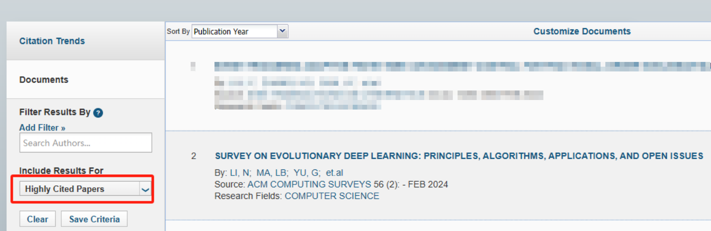

课题组新增2篇ESI全球高被引论文
据2024年5月科睿唯安公布的ESI（Essential Science Indicators）数据库显示，东北大学马连博教授题组在2023年发表的2篇论文入选ESI全球Top计算机科学领域高被引论文。据悉，高被引论文是指过去10年中所发表的论文，被引次数在该学科中相同发表年的论文中排名前1%的论文。ESI已成为当今世界范围内普遍用以评价高校、学术机构、国家/地区国际学术水平及影响力的重要评价指标工具之一。
其中，课题组成员李楠博士在课题组导师马连博教授的指导下，在SCI检索源刊《ACM Computing Surveys》发表的研究论文“Survey on Evolutionary Deep Learning: Principles, Algorithms, Applications and Open Issues”（vol. 56, No. 2, pp 1–34）被遴选为ESI高被引论文。该综述从数据准备、模型生成以及模型部署角度回顾了进化深度学习的发展历程。《ACM Computing Surveys》（《美国计算机学会计算概观》）是ASSOC COMPUTING MACHINERY出版社旗下的刊物，于1969年创刊，致力于接收计算机领域具有代表性的前沿综述论文，帮助从业者和研究人员了解迅速发展的计算领域前沿科学问题。该刊属于中科院SCI一区，影响因子为16.6，是计算机领域国际权威顶级期刊之一。

论文链接：
https://dl.acm.org/doi/full/10.1145/3603704
此外，东北大学何强老师与课题组马连博教授合作的论文“Routing Optimization with Deep Reinforcement Learning in Knowledge Defined Networking”发表在《 IEEE Transactions on Mobile Computing》同样入选ESI高被引论文。《IEEE Transactions on Mobile Computing》是一本跨学期期刊，旨在传播移动计算相关领域的最新研究和开发成果。其最新影响因子是5.577，CCF推荐为A类期刊，JCR分区Q1。
论文链接：
https://ieeexplore.ieee.org/document/10012574
课题组累计入选ESI高被引论文7篇。